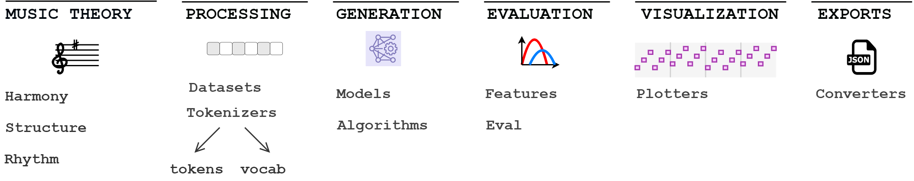

MusicAIz¶
musicaiz is a python package for symbolic music generation. It provides the building blocks necessary to create and evaluate symbolic discrete music.
Musicaiz can be used for generating, analyzing or evaluating symbolic music data.
Getting Started:
Musicaiz Documentation:
Tutorials:
References: